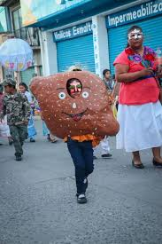
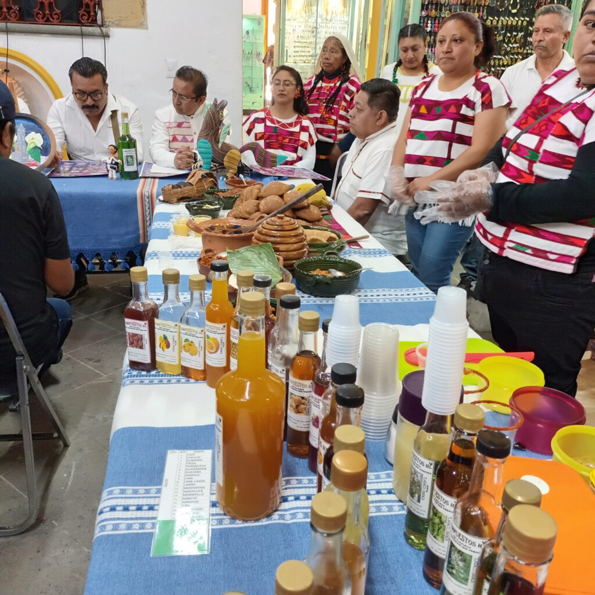
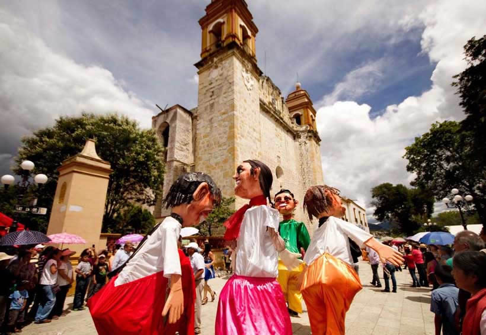

|
|
| HISTORIA CURIOSIDADES UBICACION CONTACTO |  Fiesta de Octubre: Se celebra el tercer domingo de octubre, honrando el decreto que declaró a Tlaxiaco "Heroica Villa" y le otorgó una fiesta anual en 1860

|
El "Carnaval de los Siete Barrios" en Tlaxiaco, Oaxaca, es una celebración en la que cada uno de los siete barrios tradicionales de la ciudad participa con presentaciones únicas, destacando su historia, tradiciones y cultura.
 Las costumbres incluyen la venta de artesanías, especialmente textiles y productos agrícolas, y la celebración de fiestas religiosas y sociales.
|